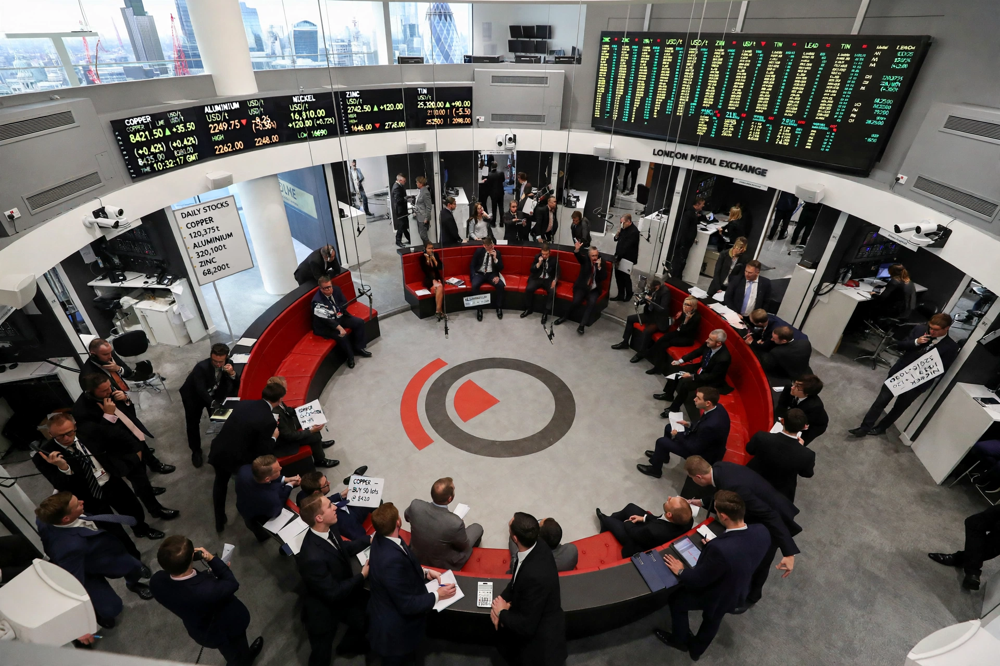

The London Metal Exchange (LME) is a futures and options exchange in London dealing in base metals. Founded formally in 1877, it is the world centre for trading industrial metals including aluminium, copper, zinc, nickel, lead and tin.

The LME is famous for "the Ring", Europe's last open-outcry trading floor, and for daily official prices used as global benchmarks. Contracts are physically deliverable through a network of approved warehouses.
Metal merchants met in London coffee houses from the 19th century as Britain's industrialisation drove demand for imported copper and tin. Hong Kong Exchanges and Clearing acquired the LME in 2012. In March 2022 the LME controversially suspended nickel trading and cancelled trades after a price spike.